// work in progress //
Or, download here
Notes prior to reading week can be found below. Right before reading week my roommate introduced me to the NotesTeX template and I’m currently using that.
ECE286: Probability and Statistics
Probability
Coin flip example & combining probabilities
Outcomes denoted by variables, i.e. for coin clip \( H \), \( T \). Probability of outcome is denoted by \( P(X) \), where \( X \) is the outcome. We must have \( \sum(P) = 1 \) since \( 100% \).
Suppose \( P(H) = 0.3 \) , \( P(T) = 0.7 \).
Then, $$P(HT) = P(H)P(T) = 0.3 \times 0.7 = 0.21 $$ $$ P(HT) = P(H)P(T) = 0.3 \times 0.7 = 0.21 $$ $$ P(HT \text{ or } TH) = P(H)P(T) + P(T)P(H) = \\ 0.3 \times 0.7 + 0.7 \times 0.3 = 0.42 $$
Sets and events
Sample space: set of all possible outcomes. E.x.
- coin flip: \( S = {H, T} \)
- roll of a die: \( S = {1,2,3,4,5,6} \)
- roll of a die but only care even/odd: \( S = {even, odd} \)
Event: a subset of sample space
For example, each element, \(e \in S = {1,2,3,4,5,6} \) are the elements of S for a die.
Complement of an event A w.r.t. S: everything in \( S \) and not \( A \), denoted \( A' \).
Example: for a die, \( {1, 2} \) is the complement of \( {3,4,5,6} \)
Intersection of two events: everything in \( A \) and \( B \), denoted \( A \cap B \)
Union of two events: everything in \( A \) or \( B \), denoted \( A \cup B \)
Counting
Multiplication Rule: The total amount of outcomes is the product of the amount of outcomes in each event. I.e. if for a sequence if \( k \) events \( E_1, E_2, …, E_k \) with outcomes \( S_1, S_2, …, S_k \) then the total amount of outcomes is \( \prod_{i=1}^k S_i \)
Permutations: \( n \) distinct objects can be arranged in \( n! \) ways. When considering permuting a subset of size \( r \) taken from a set of size \( n \), the total number of arrangements is given by
$$ nPr = \frac{n!}{(n-r)!} $$
If we can have repeated kinds, i.e. if there are \( m \) kinds of items and \( n_k, k = 1, \dots m \) of each kind, then there are
$$ \frac{n!}{n_1!n_2!\dots n_m!}$$ permutations.
For example, we can order “ATLANTIC” \( \frac{8!}{2!2!1!1!1!1!} = 10080\) times.
The same formula applies for finding the number of ways to arrange \( n \) items into \( k \) subsets of size \( n_1, n_2, \dots , n_k \)
Combinations: Permutations, but order doesn’t matter.
$$ nCr = \binom{n}{r} = \frac{n!}{r!(n-r)!} $$
Note similarity to the partition formula; combinations can be thought as the set of partitions of size \( 1 \).
Additive Rules
For events A, B: $$ P(A\cup B) = P(A) + P(B) - P(A\cap B)$$
For \( n \) mutually exclusive events \( A_1, A_2 … A_n \) $$ P(A_1 \cup A_2 \cup … A_n) = P(A_1) + P(A_2) + … + P(A_n)$$
And if \( A_1, A_2 … A_n \) is a partition of sample space S,
$$ P(A_1 \cup A_2 \cup … A_n) = P(A_1) + P(A_2) + … + P(A_n)$$
And: $$ P(A \cup B) + P(A) + P(B) $$
Conditional Probability
$$ P(B|A) = \frac{P(A\cap B}{P(A)}$$
The probability of B occurring, given that A occurs
Total probability
Suppose A is an event and \(B_1, … B_k\) is a partition.
Recall: \( B_1 … B_k \)) is a partition if \( B_i \cap B_j \neq 0\) and \( B_1 \cup … B_k = S\)
$$ P(A) = \sum_{i=1}^k P(A \cap B_i) $$
For example, if we have machines \( B_1, B_2, B_3 \) that make products 30%, 45%, 25% of the time (note that this forms a partition)
And that they produce 2%, 3%, 2% defective products, we can find the probability of there being a defect as
$$ P(D) = P(B_1)P(D|B_1) + P(B_2)P(D|B_2) +P(B_3)P(D|B_3) \\ = (0.3 * 0.02) + (0.45 * 0.03) + (0.25 * 0.02) = 0.0245 $$
And we can get the chance it came from machine 2 by applying Bayes' rule.
Bayes' Rule & Random Variables
Define: Bayes' Rule $$ P(C_n|A) = \frac{P(C_n)P(A|C_n)}{\sum^k_{i=1} P(C_i)P(A|C_i)} $$
E.x. Probability that a defective product comes from machine 3 \( B_3 \)
$$P(B_3|D) = \frac{P(B_3)P(D|B_3)}{P(D)} = \frac{0.25*0.02}{0.0245} = 10/49$$
Given that the product is defective, what is the chance it came from machine 3?
Bayes' rule is useful when we have limited information. For example if we’re trying to check if we have a disease: Given:
- Chance of having disease \( P(D) \) = \( 1/1000 \)
- A test kit that has a true positive rate \( P(T = 1|D) = 0.7 \), false positive \(P(T=1| not D) = 0.05\)
What is \( P(D|T = 1) \)? (Chance of having disease given test kit is true positive?)
$$ P(D|T=1) = \frac{P(T=1|D)P(D)}{P(T=1|D)P(D)+P(T=1|not D)P(not D) } \\ = (0.7 \times 0.001 ) / (0.7 \times 0.001 + 0.05 \times 0.999) \approx 0.014 $$
This may look like a number that’s really off. Why would a positive test result only indicate a 1.4% change of having the disease? Must recall: this as the “inverse” of the true positive rate (chance of testing positive if you have the disease).
This can be applied in sequential state estimation. Given
- State \( X_t \)
- Observation \( Y_t = g(X_t) \)
- Dynamics \( P(X_{t+1} | X_t) \) (typically Markov chain1/LTI (Linear Time-Invariant)2 system)
Markov chains are a stochastic model where the probability of each state depends only on the previous state
We can build an estimator…
$$ P(Y_{t+1}|X_{t+1}) = \frac{P(Y_{t+1}|X_{t+1},X_t)P(X_{t+1}|X_t)}{P(Y_{t+1})}$$
- Optimal solution to LTI system problem is the Kalman filter. Often used for vehicle dynamics, circuits, or anything that requires a long look into the “future”
- Example application of Markov chains could be a machine with a few states {active, inactive, broken}.
- Markov chains can sometimes be directly computable & are often central to DP/RL problems
Random Variables
A Random variable is a function that associates a real number with each element in the sample space
E.x if we’re testing some components and \( N \) denotes non-defective and \( D \) denotes defective,
$$ S = \{NNN, NND, NDN, DNN, NDD, DND, DDN, DDD\} $$
and we are concerned about the number of defective items, the outcome (total no. of defective items) can be assumed by a random variable, let’s call it \( X \), which can take on the values \( \{0, 1, 2, 3 \} \). So each value of \(x \in X \) represents an event that is a subset of the sample space. For example \( x = 2 \) corresponds to a subset \( \{DDN, DND, NDD\} \).
- Discrete random variables take on finite/countable values; denote w/ capital letters
- Continuous random variables take on values in an interval of \( \mathbb{R} \)
- Has a probability of 0 of assuming exactly any of its values
- Denote individual values with the lowercase letter equivalent
Distributions
Discrete Probability Distributions
Probability that a discrete RV takes on each value
I.e. if \( X \) is the # of heads for 3 coin flips
- \( P(X=0) = 1/8 \)
- \( P(X=1) = 3/8 \)
- \( P(X=2) = 3/8 \)
- \( P(X=3) = 1/8 \)
Probability function/mass function/distribution (PMF)
Define: \( f(x) \) is a PMF of the discrete RX \( X \) if \( \forall x \in X \)
- \( f(x) \geq 0 \)
- \( \sum_x f(x) = 1 \)
- \( P(X=x) = f(x) \)
Cumulative Distribution Function
When we want to find if the observed value of a random variable will be less than or equal to some real number \( x \).
Define: Cumulative Distribution Function (\( CDF \))
$$ F(x) = P(X \leq x) = \sum_{t\leq x} f(t), \hspace{1cm} - \infty < x < \infty $$
Note that this function is not only defined for the values assumed by the random variable, but for all real numbers as well.
Continuous Probability Distributions
Recall: Continuous RV have a probability of 0 of assuming exactly any of its values.
Consider a RV whose values are the lengths of hair on one’s head. There are an infinite number of hair lengths between any two values, and as such we assign a probability of 0 to each event. Instead we concern ourselves with probabilities across intervals.
Define: Probability Density Function (\( PDF \))
\( f(x) \) is a \( pdf \) for the continuous random variable \( X \) if
- \( f(x) \geq 0 \)
- \( \int_{-\infty}^\infty f(x) = 1 \)
- \( P(a < X < b)= \int_a^bf(x) \)
We can apply the CDF concept to a continuous RV with a density function as well
Define: Cumulative Distribution Function (\( CDF \))
$$ F(x) = P(X \leq x) = \int_{-\infty}^x f(t) dt, \hspace{1cm} - \infty < x < \infty $$
A nice result can then be obtained by applying the fundamental theorem of calculus,
$$ P(a < X < b) = F(b) - F(a) $$
and
$$ f(x) = \frac{dF(x)}{dx} $$
NOTE: Probability mass functions describe the probability of discrete distributions, whereas probability density functions describe continuous distributions.
Joint Probability Distributions
What if we want to deal with more than one random variable at a time?
Define: \( f(x, y) \) is a joint probability distribution / probability mass function of discrete RV \( X, Y \) if:
- \( f(x, y) \geq 0 \)
- \( \sum_x \sum_y f(x, y) = 1 \)
- \( P(X = x, Y = y)= f(x, y) \)
\( \forall \) region \( A \) in the \( xy \) plane, \( P[(X,Y) \in A] = \sum \sum_A f(x, y) \)
e.x if, for a car that needs service, \( X \) denotes distance driven on a set of tires and \( Y \) denotes no. of tires to be replaced, then \( f(10000, 2) \) is the probability that it has driven for over 10000 distance units and the car needs 2 new tires.
For example, if we select 2 ballpoint pens from a box containing 3 blue/2 red/3 green pens, and if \( X \) is the no. of blue pens selected and \( Y \) the no. of red pens selected,
The joint probability function is the set is
$$f(x,y) = (0,0), (0,1), (1,0), (1,1), (0,2), (2,0)$$
And for \( A = \{ (x, y) | x + y \leq 1 \}\)
$$ P[(X, Y) \in A] = P( X + Y \leq 1 ) = f(0,0) + f(0,1) + f(1, 0) \\ = \frac{3}{28} + \frac{3}{14} + \frac{9}{28} = \frac{9}{14} $$
The same can be applied to continuous probability distributions as well
Define: \( f(x, y) \) is a joint density function of continuous RV \( X, Y \) if:
- \( f(x, y) \geq 0 \)
- \( \sum_{-\infty}^{\infty} \sum_{-\infty}^{\infty} f(x, y) = 1 \)
- \( P[(X, Y) \in A] = \int \int_A f(x, y) dx dy\) for any region A in the \( xy \) plane
TLDR; integrating over whole region gives probability of 1, integrating over a subregion gives the probability of an event within that range.
But what if we want to inspect the probabilities dist. of a specific RV within the joint distribution?
Define: the marginal distributions of \( X \), \( g(x) \), given joint distribution \( f(x, y) \), is:
for discrete case:
$$ g(x) = \sum_y f(x,y) $$
for continuous case:
$$ g(x) = \int_{-\infty}^{\infty} f(x, y) dy$$
The same follows for finding the marginal distribution of \( Y \), \( h(y) \)
Define: Conditional probability distribution \( P(y|x) \)
$$ f(y|x) = \frac{f(x,y)}{g(x)}, g(x) > 0$$
For example if we want to find if a discrete random variable \( X \) falls in between \( a \) and \( b \) when \( Y \) is known, we can evaluate
$$ P(a < X < b | Y = y) = \int_a^bf(x|y)dx = \int_a^b \frac{f(x,y)}{h(y)}dx $$
Define: Statistical Independence
Given RV \( X \) and \( Y \) with joint probability distribution \( f(x, y) \) and marginal distributions \( g(x) \) and \( h(y) \) respectively, \( X \) and \( Y \) are statistically independent if and only if
$$ f(x,y) = g(x)h(y) $$
for all values of \( x, y \) in their range.
We can generalize this to a set of random variables \( X, Y, Z, … \) with joint probability distribution \( f(x, y, z, …) \) and marginal distributions \( g(x), h(y), i(z), … \) respectively.
\( X, Y, Z, … \) are statistically independent if and only if
$$ f(x, y, z, …) = f_x(x) f_y (y)f_z(z)…$$
Recall: doesn’t this look a lot like when we did all the linear independence stuff back in MAT185?
Define: Expectation/Mean of RV
Or: What would the average value be in the long run if we keep on sampling from the distribution
Let \( X \) be a random variable with probability distribution \( f(x) \)
$$ \mu = E[X] = \int_{-\infty}^\infty x f(x) dx $$
if \( g(X) \) is a function of \( X \),
$$ \mu = E[g(X)] = \int_{-\infty}^\infty g(x)f(x) dx $$
and this can be generalized to joint distributions as well
$$ \mu = E[g(X, Y)] = \int_{-\infty}^\infty \int_{-\infty}^\infty g(x, y)f(x, y) dx dy $$
This value is of special importance as it describes where the probability distribution is centered.
Define: Variance
Or: how much the distribution spreads out
For finding the variance of a random variable \( g(X) \):
Discrete: $$ \sigma^2 = E[(g(X)-\mu)^2] = \sum_x (x-\mu)^2 f(x)$$
Continuous: $$ \sigma^2 = E[(g(X)-\mu)^2] = \int_{-\infty}^{\infty} (x-\mu)^2 f(x)dx $$
to find the variance of just \( X \), use \( g(X) = X \)
A simplified form of the above to find variance of RV \( X \):
$$ \sigma^2 = E(X^2) - \mu^2 $$
Define: Covariance
Given RV \( X, Y \) and joint probability distribution \( f(x, y) \), how closely are they associated?
Discrete: $$ \sigma_{XY} = E[(X-\mu_X)(Y-\mu_Y)] = \sum_x \sum_y f(x,y) (x-\mu_X)(y-\mu_Y) $$
Continuous:
$$ \sigma_{XY} = E[(X-\mu_X)(Y-\mu_Y)] = \int_{-\infty}^{\infty} \int_{-\infty}^{\infty} f(x,y) (x-\mu_X)(y-\mu_Y) dx dy $$
A simplified form of the above:
$$ \sigma_{XY} = E(XY) - \mu_x\mu_y $$
- If large values of \( X \) often result in large values of \( Y \), the covariance is positive.
- If large values of \( X \) often result in small values of \( Y \), the covariance is negative.
- Sign of covariance denotes positive/negative relationship between \( X \), \( Y \).
- If \( X, Y \) are statistically independent, the covariance is 0.
Note: the reverse is not always true since covariance only describes a linear relationship between two RV
Correlation coefficient of \( X, Y \):
$$ \rho_{XY} = \frac{\sigma_{XY}}{\sigma_X\sigma_Y} $$
Linear Combinations of Random Variables
\( p(x) \) is linear if it satisfies the linearity test:
- \( p(ax+b) = ap(x) + bp(x) \) for constant \( a \), constant \( b \).
With the help of some integrals we can show that expectation is linear as well:
$$ E[aX + b] = aE[X] + b $$
or more generally,
$$ E[g(X) \pm h(X)] = E[g(X)] \pm E[h(X)] $$
The same also applies to functions of >1 random variables. This leads to a number of properties, the one of note that isn’t immediately obvious is that
$$ E(XY) = E(X)E(Y)$$
the above theorem may be applied to show that if X, Y are two independent random variables, then \( \sigma_{XY} = 0 \)
Theorem: if \( X \) and \( Y \) are random variables with joint probability distribution \( f(x, y) \) and \( b, c \) are constants, then
$$ \sigma_{aX + bY + c} = a^2\sigma_X^2 + b^2\sigma_Y^2 + 2ab\sigma_{XY} $$
If \( X \) and \( Y \) are random variables, what would the covariance of a linear combination of them be? Note that the covariance doesn’t depend on \( c \)
Discrete Distributions
Define: Binomial Distribution
A discrete distribution that models the number of successes in a Bernoulli process, which is a process that satisfies the following:
- An experiment that may be repeated many times
- Each trial has a boolean outcome
- The outcome probability is trial-constant
- Repeated trials are independent
Some properties:
Probability of \( x \) 1s and \( 1-x \) 0s in some order is \( p^x(1-p)^{n-x} \)
No. of ways to have \( x \) 1s and \( 1-x \) 0s is $$ \binom{n}{x} $$
Therefore the binomial distribution may be presented as:
$$ b(x; n, p) = \binom{n}{x} p^x(1-p)^{n-x} $$
Expectation: $$ E[X] = \sum_{x=0}^n x \binom{n}{x} p^x(1-p)^{n-x} = np $$
Variance:
Note: each trial is independent \( \sigma_{Y_j Y_k} = 0 \qquad, k \neq j \)
$$ \sigma_X^2 = np(1-p) $$
Define: Multinomial Distribution
A discrete distribution that can have \( m \) outcomes instead of the \( 2 \) of the binomial distribution.
$$ f(x_1, x_2 …, x_k; p_1, p_2, … p_k, n) \\ = \binom{n}{ x_1 … x_k } p_1^{x_1}, p_2^{x_2} … p_k^{x_k} $$
Define: Hypergeometric Distribution
Hypergeometric distributions model sampling without replacement, whereas multinomial distributions model sampling with replacement
A hypergeometric distribution \( h(x; N, n, k) \) is the probability distribution of the hypergeometric random variable which represents the no. of successes of a hypergeometric experiment (that’s a lot of hypergeometric), which is an experiment where:
- A random sample of size \( n \) is drawn \( N \) items without replacement
- Of the \( N \) items, \( k \) are successes and \( N-k \) are failures.
Mean: $$ \mu = \frac{nk}{N} $$ Variance: $$ \sigma^2 = \frac{N-n}{N-1} \cdot n \cdot \frac{k}{N} ( 1 - \frac{k}{N} ) $$
PMF:
$$ h(x; N, n, K) = \frac{\binom{K}{x}\binom{N-K}{n-x}}{\binom{N}{n}} $$
Negative Binomial & Geometric Distributions
Instead of finding the probability of \( x \) successes in a fixed \( n \) trials, negative experiments are interested in the probability that the \( k \)th success occurs on the \( x \)th trial
Define: Negative Binomial
$$ b*(x; k, p) = \binom{x-1}{k-1} p^k(1-p)^{x-k} $$
Intuition:
- on the \( x \)th trial the chance of \( k-1 \) successes in the last \( x-1 \) trials is \( b(k-1; x-1, p) = \binom{x-1}{k-1}p^{k-1}(1-p)^{x-k} \)
- Extend that to \( x, k \), observe that \( b*(x;k,p) = pb(k-1;x-1, p) \) and so forth
Define: Geometric Distribution
Repeated trials with probability of success \( p \); can be thought of as a negative binomial distribution with \( k = 1 \)
$$ g(x;p) = b*(x; 1, p) = p(1-p)^{x-1} $$
Properties
- \( \mu = \frac{1}{p} \)
- \( \sigma^2 = \frac{(1-p)}{p^2} \)
Example application: playing a game where the opponent wins 90% of the time. How many games until the first win? \( g(x; 0.1) = 0.1(0.9)^{x-1} = 1/0.1 = 10 \)
Poisson Distribution
A Poisson distribution models the probability distribution of the Poisson random variable which represents the numerical output of Poisson experiments in a Poisson process
That’s a lot of Poisson!
A Poisson process has the following properties:
- The number of outcomes occurring during one interval is independent of others, i.e. the process is stateless
- The probability that a single outcome will occur in an interval is proportional to the size of the interval and does not depend on the no. of outcomes outside of that interval
- The probability that > 1 outcome will occur in such a short time interval or fall in a small one is negligible
Define: Poisson probability distribution
$$ p(x, \lambda t) = \frac{e^{-\lambda t} ( \lambda t )^x}{x!} \qquad, x \ge 0 \in \mathbb{Z}$$
- \( \lambda \) is the rate of occurrence of the event per unit in interval
- Mean: \( \mu = \lambda \)
- Variance: \( \sigma^2 = \lambda \)
Note that we can also write the Poisson distribution as a limit of the binomial distribution
$$ \lim_{n \to \infty, p \to 0} b(x; n, p) \\ = \lim_{n \to \infty, p \to 0} \frac{n(n-1) … (n-x+1)}{x!} \lambda/n)^x(\frac{\lambda}{\lambda/n})^{n-x} \\ = \lim_{n \to \infty, p \to 0} \frac{n^x}{x!} (\lambda/n)^x (1-\lambda/x)^{n-x} \\ = \frac{\lambda^x}{x!} \lim_{n \to \infty, p \to 0} e^{-\lambda} = \frac{\lambda^x}{x!}e ^ {-\lambda} \\ = p(x; \lambda) \\ $$
Uniform Distribution
Define: Uniform Distribution
\( X \) has PDf
$$ f(x; A, B) = \begin{cases} \frac{1}{B-A} & \text{if } x \in [A, B] \\ 0 & \text{if } x \notin [A, B] \end{cases} $$
Mean:
$$ \mu = E[X] = \int_{-\infty}^{\infty} x f(x; A, B) dx = \int_A^B \frac{x}{B-A} dx = \dots = \frac{B+A}{2} $$
Varience: $$ \sigma^2 = E[(x-a)^2] = \frac{(B-A)^2}{12} $$
Often used in describing nature. Rolling dies (discrete uniform distribution). Is also really easy to do calculations with.
Normal (Gaussian) Distribution
It’s somewhat special so we denote it by \( u \)
$$ u(x; \mu, \sigma) = \frac{1}{\sigma \sqrt{2\pi} } \exp(-\frac{(x-\mu)^2}{2\sigma^2}) \qquad x \in \mathbb{R} $$

\( \sigma \) will tell us how “flat” or “peaked” it is; the spread, whereas \( \mu \) tells us its shift to the left/right
This seems like an awfully unintuitive distribution. Let’s break it down and build intuition.
Is it a PDF?
If we integrate it over the whole domain, do we get $$ \int_{-\infty}^{\infty} n(x; \mi, \sigma) dx = 1 \qquad ?$$
This isn’t really a straightforwards integral to solve – there’s a trick to it: apply polar coordnates.
- Try multiplying them together.
1 x 1 = 1
$$ \int_{-\infty}^{\infty} n(x; \mu, \sigma) dx \cdot \int_{-\infty}^{\infty} n(y; \mu, \sigma) dy \\ =\int_{-\infty}^{\infty} \int_{-\infty}^{\infty} n(x, \mu, \sigma)n(y; \mu, \sigma) dx dy$$
Recall: \( r^2 = x^2 + y^2\) and \( dxdy = r dr d\theta \)
$$ = \frac{1}{2\pi\sigma^2} \int_0^{2\pi} \int_0^\infty \exp{\frac{-r^2}{2\sigma^2}} r dr d\theta \\ = \frac{2\pi}{2\pi\sigma^2} \int_0^\infty \exp{\frac{-r^2}{2\theta^2}} r dr$$
Apply u-substitution to the integral, \( s = r^2, ds = 2rdr\)
$$ = - \frac{2\sigma^2}{2\sigma^2} \exp{1\frac{s}{2\sigma^2}} |^\infty_0 \\ = -(0-1) = 1$$
And therefore it is a PDF.
What is the mean?
Apply the definition of expectation $$ E[X] = \int_{-\infty}^{\infty} x \frac{1}{\sigma \sqrt{2\pi} } \exp(-\frac{(x-\mu)^2}{2\sigma^2}) \qquad x \in \mathbb{R} dx $$
Apply a u-sub to integral, \( z = \frac{x-\mu}{\sigma} \)
$$ \frac{\sigma}{\sqrt{2\pi}} \int_{-\infty}^{\infty} z \exp{(-z^2/2)} dz + \frac{\mu}{\sqrt{2\pi}} \int_{-\infty}^{\infty} \exp{(-z^2/2)} dz = \mu$$
The first term is an odd function so it will cancel out to \( 0 \). The 2nd term is a normal PDF, i.e. \( n(x; 0, 1) \) which will integrate to \( 1 \), and as such this whole thing evaluates to \( \mu \)
Variance?
$$ E[(X-\mu)^2] = \sigma^2 $$
Notice the relation between \( \sigma \) and the spread of the PDF.
Recall, PDF is the probability density function which when integrated over the whole domain, gives 1. The CDF is the running integral of the PDF, i.e. is increasing, of range \( (0, 1)\), and approaches 1 as \( X \rightarrow \infty \). From this result it is fairly intuitive that \( P(A \leq X \leq B) \) = \( P(B) - P(A) \)
Standard normal distribution
A special form of the normal distribution is the standard normal distribution
$$ n(x; 0, 1) = \frac{1}{\sqrt{2\pi}} \exp{x^2/2} $$
The CDF of the standard normal distribution is denoted as \( \Phi(X) \)
$$ \Phi(X) = \int_{-\infty}^{x} n(t; 0, 1) dt $$
And it follows that for a standard normal RV \( X \),
$$ P(A \leq X \leq B) = \Phi(B) - \Phi(A) $$
But why do we need a standard normal distribution?
Consider any \( n(x; \mu, \sigma) \) distribution – there is no analytical solution to the integral \( \int_{-\infty}^x n(t; 0, 1) dt \) 3.
So we can only computationally get the CDF of the normal distribution, which is not ideal.
But can we compute \( n(x; \mu, \sigma) \) using \( \Phi(X) \)?
As it turns out – yes we can. Let
$$ Z = \frac{x-\mu}{\sigma} \qquad \text{where} X \text{has} n(x; \mu, \sigma) $$
Consider
$$ \begin{aligned} P(X \leq x) &= \int_{-\infty}^{x} n(t; \mu, \sigma) dt \cr &= \int_{-\infty}^{x} \frac{1}{\sqrt{2\pi}\sigma} \exp{-\frac{(t-\mu)^2}{2\sigma^2}} dt \cr (\quad s &= \frac{t-\mu}{\sigma}, dt = \sigma ds \qquad \dots \text{apply u-substitution: }) \cr &= \int_{-\infty}^{\frac{x-\mu}{\sigma}} \frac{1}{\sqrt{2\pi} \sigma } \exp{-s^2/2} \quad \text{note how this looks like standard normal dist.}\cr &= \Phi(\frac{x-\mu}{\sigma}) \cr &= P(Z = (x-\mu)/\sigma) \cr \end{aligned} $$
Example: Let \( X \) be a normal RV with PDF \( n(x; 5, 2) \). Find \( P(-1 \leq X \leq 4 ) \) w.r.t. the CDF of the standard normal distribution
By inspection, $$ \text{Let} Z = \frac{X-5}{2} $$
then,
$$ P(-1 \leq X \leq 4) = P( \frac{-1-5}{2} \leq \frac{x-5}{2} \leq \frac{4-5}{2} ) \\ = P(-3 \leq Z \leq 0.5) = \Phi(-0.5) - \Phi(-3) \approx 0.3072$$
The normal distribution can be used to approximate the binomial distribution.
- \( n trials \
- i.e. for a coin flip & modelling # of heads: \( b(x; n, p) = \binom{n}{x} p^x (1-p)^{n-x} \)
- mean: \( np \), variance: \( np(1-p) \)
$$ Z = \frac{x-np}{\sqrt{np(1-p)} }$$
- note that for many things as \( n \rightarrow \infty \) the distribution of \( Z \) appears to be a standard normal distribution.
Gamma Distribution
Define: Gamma function
$$ \Gamma(\alpha) = \int_{0}^{\infty} x^{\alpha - 1} e^{-x} dx $$
The gamma distribution is a distribution that makes use of the gamma function. it is not very intuitive.
$$ f(x; \alpha, \beta) = \begin{cases} \frac{1}{\beta^\alpha \Gamma(\alpha)} x^{\alpha - 1} e^{-\frac{x}{\beta}} & \text{for } x \geq 0 \\ 0 & \text{otherwise} \end{cases} $$
$$ \alpha > 0, \beta > 0 $$
- \( E[ X ] = \mu = \alpha\beta \)
- \( \sigma^2 = \alpha\beta^2 \)
However a lot of much nicer distributions can be derived from the gamma distribution.
Define: Chi-Squared (\( \chi^2 \)) distribution
$$ f(x; v) = \frac{1}{2^{\frac{v}{2}}\Gamma(\frac{v}{2})} x^{\frac{v}{2} -1} e^{-\frac{x}{2}} \qquad x > 0 $$
This is the gamma distribution with \( \alpha = 2 \).
Good for describing confidence intervals, and for describing the distribution of a sample of a population. See: chi-squared test
Define: Exponential distribution
$$ f(x; \beta) = \begin{cases} \frac{1}{\beta} e^{-\frac{x}{\beta}} & \text{for } x > 0 \\ 0 & \text{otherwise} \end{cases} $$
this is the gamma distribution with \( \alpha = 1 \).
Properties:
- \( E = \beta \)
- \( \sigma^2 = \beta^2 \)
- Relates to the Poisson distribution
- Is memory-less
Exponential Distribution & Poisson Distribution
Recall: for a Poisson distribution, \( p(x; \lambda) = \frac{e^{-\lambda} x^\lambda}{x!} \), \( \mu = \lambda \) We can interpret this as \( \lambda = rt \).
If buses arriving at a bus stop was a Poisson process, then the time interval between the bus arrivals would be an exponential distribution.
For example, if we’re trying to find the probability of no arrivals within \( x \),
$$ p(0, rx) = e^{-rx} $$
Let \( X \) be a RV for the time of the first arrival.
The probability of no arrivals in that time frame is the same as the probability of the first arrival to be after time \( x \).
Then, given
$$ P(X \geq x) = p(0; rx) = e^{-rx} $$
We have
$$ P(X < x) = p(0; rx) = 1 - e^{-rx} $$
This is the CDF of the RV \( X \)
Apply fundamental theorem of calculus
$$ F(X) = 1-e^{-rx} $$
then we get the PDF
$$ f(x) = \frac{d}{dx} F(x) = re^{-rx} $$
Which is an exponential distribution with \( r = 1/\beta \).
Exponential Distribution & Memory-less-ness
Given RV \( X \) with \( f(x, \beta) = \frac{1}{\beta} e^{-x/\beta} \), consider
$$ P(X \geq s + t) \qquad X \geq s $$
Can split this up into two parts and then evaluate…
$$ \begin{aligned} &= \frac{P(X \geq x+t \cap X \geq s)}{P(X \geq s)} \cr &= \frac{P(X \geq x+t)}{P(X \geq s)} \cr &= \frac{ \int_{s+t}^{\infty} \frac{1}{\beta} e^{\frac{-x}{\beta}} dx }{ \int_{s}^{\infty} \frac{1}{\beta} e^{\frac{-x}{\beta}} dx } \cr &= \frac{ e^{-\frac{s+t}{\beta}} }{ e^{-\frac{s}{\beta}} } \cr &= e^{-\frac{-t}{\beta}} \cr &= P(X \geq t) \cr \end{aligned} $$
i.e. what’s the probability of \( s+t \) if we’ve already waited up to \( s \)? I.e. if we’ve already waited \( s \) seconds, then the following probability (\( s + t \)) is entirely unaffected by those initial \( s \) seconds.
ECE259: Electromagnetism
Electromagnetic field is a vector quantity given by a magnitude \( E \) and unit vector \( \hat{a} \), and is commonly found as the force exerted on a positive test charge \( q \).
$$ \vec{E}= E\hat{a}_E = \frac{\hat{F}}{q} = q\vec{E}$$
We can expand on this to find the force exerted by a point charge at varying distances \( r \) from the charge, noting that \( k = \frac{1}{4\pi E_o}\), where \( E_o \) is the permittivity of free space.
$$ \vec{E} = \frac{1}{k} \frac{q_{source}}{r^2} \hat{a}_e $$
and this can be further generalized for a system of charges that are not necessarily at the origin
$$ \vec{E_{sys}} = \frac{1}{k}\sum_k \frac{q_k}{|\vec{R}-\vec{R'_k}|^3}(\vec{R} - \vec{R'_k}) $$
Vector Calculus Review
Coordinate Systems
Cylindrical \(( r_p, \phi_p, z_p)\):
Note: When adding vectors in non-Cartesian coordinate systems we cannot just add the components because the direction of the unit vectors can change.
When adding vectors in non-Cartesian coordinate systems we must first convert the vectors to Cartesian coordinates
Cylindrical -> Cartesian: $$ r_p = \sqrt{x_p^2 + y_p^2} $$ $$ \phi_p = \arctan(y_p/x_p) $$ $$ z_p = z_p $$
Cartesian -> Cylindrical: $$ x_p = r_p \cos(\phi_p) $$ $$ y_p = r_p \sin(\phi_p) $$ $$ z_p = z_p $$
Spherical \(( r_p, \theta_p, \phi_p)\):
\( \theta \) gives angle w.r.t the z-axis, \( \phi \) gives angle w.r.t the x-axis
Cartesian -> Spherical: $$ r_p = \sqrt{x_p^2 + y_p^2 + x_p^2} $$ $$ \theta_p = \arccos{\frac{z}{\sqrt{x_p^2 + y_p^2 + z_p^2} }}$$ $$ \phi_p = \arctan(y_p/x_p) $$
Spherical -> Cartesian: $$ x_p = r_p \sin{\theta_p}\cos{\phi_p} $$ $$ y_p = r_p \sin{\theta_p}\sin{\phi_p} $$ $$ z_p = r_p \cos{\theta_p}$$

From reference sheet
Integration
Multidimensional integration in different coordinate systems can largely be done just by finding the appropriate differential element and then inserting it into the appropriate formula.
- Line integrals: $$ -\int_A^B{\vec{E} \cdot d \vec{l}} $$
example application: finding potential difference
- Surface integrals:
$$ \int_S{\vec{D}\cdot d\vec{s}} $$
Example application: finding flux, etc.
- Volume integrals:
$$\int_V{ P dV } $$
example application: finding total charge
-
Cartesian $$ d\vec{l} = d_x\vec{a_x} + d_y\vec{a_y} + d_z \vec{a_z} $$ $$ d\vec{s} = d_y d_z \vec{a_x} + d_x d_z \vec{a_y} + d_x d_y \vec{a_z} $$ $$ dV = d_xd_yd_z $$
-
Cylindrical
$$ d\vec{l} = d_r\vec{a_r} + d_\phi \vec{a_\phi} + d_z\vec{a_z}$$ $$ d\vec{s} = r d_\phi d_z \vec{a_r} + d_r d_z \vec{a_\phi} + r d_\phi d_r \vec{a_z} $$ $$ dV = r d_\phi d_zd_r $$
- Spherical
$$ d\vec{l} = d_R \vec{a_r} + Rd\theta \vec{a_\theta} + R\sin{\theta}d_\phi \vec{a_\phi} $$ $$ d\vec{s} = R^2\sin{\theta}d_\theta d\phi \vec{a_r} + R\sin{\theta}dRd\phi\vec{d_\phi} $$ $$ dV = R^2\sin{\theta}d_Rd_\theta d_\phi $$
A general approach for integration is as follows:
- Choose a coordinate system
- Determine which position coordinates vary during integrationa nd their ranges
- Select the appropriate differential quantity, e.g. \( d\vec{l} \), \( d\vec{s} \), \( dV \), etc.
- If the integrand is a vector, make sure that all unit vectors are constant during integration
- Integrate over the appropriate limit
It is often useful to convert between types of integrals to make the process easier.
This can be done with the following theorems:

Electric Fields
Continuous charge distribution
Recall: \( \vec{E_{sys}} = \frac{1}{4\pi\varepsilon_o}\sum_k \frac{q_k}{|\vec{R}-\vec{R'_k}|^3}(\vec{R} - \vec{R'_k}) \)
In continuous form, \( \int{d\vec{E}} \)
Steps for solving charge distribution problem:
- Choose coordinate system
- Write out \( dQ \)
- Write out \( \vec{R} - \vec{R'} \)
- Write \( d\vec{E} \)
- Integrate!
Drawing
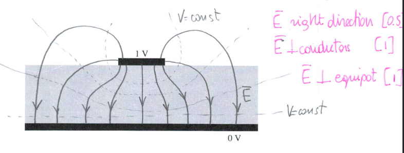
- \( \vec{E} \) must be perpendicular to conductors
- Equipotential lines are perpendicular to \( \vec{E} \) lines
Volume Charge
$$ dQ = P_v dv' $$
Contribution to \( \vec{E} \). \( P \) denotes volume charge density [C/m^3]
$$ \vec{E} = \frac{1}{4\pi\varepsilon_o} \int_{V'} \frac{P_v}{|\vec{R}-\vec{R'}|^2} \hat{a}_{\vec{R} - \vec{R'}} dV' $$
Noting that
$$ \hat{a}_{\vec{R} - \vec{R}} = \frac{\vec{R} - \vec{R'}}{|\vec{R} - \vec{R'}|}$$
we obtain that $$ \vec{E} = \frac{1}{4\pi\varepsilon_o} \int_{V'} \frac{P_v}{|\vec{R}-\vec{R'}|^3} (\vec{R} - \vec{R'}) dV' $$
Much the same approach can be taken for surface and line charges; they all end up having the same form but with \( ds' \) or \( dl' \)), respectively.
Flux & Gauss’s Law
- Electric fields extend (with decreasing density) from point charges (away from charge for +’ve, towards charge for -’ve).
- A good way to “visualize” this is to draw field lines.

Note that greater field line density corresponds to greater field strength. We usually aren’t concerned with field strength at a point, however, but rather it’s effect on surfaces.
Define: Flux: the electric field through a surface
$$ \Phi = \int_s \vec{E} \cdot d\vec{s} $$
where \( d\vec{s} \) denotes a normal vector to the surface.
Note the dot product! This also means that a surface parallel to the field lines will have a flux of 0.
Define: Gauss’s law (Integral form)
$$ \Phi_E = \oint_s \vec{E}\cdot d\vec{s} = \frac{Q}{\varepsilon_o} $$
- Take integral over a closed surface (gaussian surface)
- \( Q \) denotes charge inside surface and is equal to \( \int P_v dv' \) or \( P_v \) multiplied by the volume in question
Total flux out of a surface is equal to the (total charge enclosed by surface)/(permittivity of free space)
if \( \oint \vec{E} \cdot d\vec{s} \) > 0; net flux out (+’ve charge enclosed), < 0; net flux in (-’ve charge enclosed)
It can also be written in differential form using the divergence theorem:
Recall: \( \int_v \vec{\nabla} \cdot \vec{A} dv = \oint_s \vec{A} \cdot d\vec{s} \))
$$ \vec{\nabla} \cdot A = \lim_{\Delta V \to 0} \frac{\oint_S \vec{A} \cdot d \vec{s}}{\Delta V} $$
where the value in the limit denotes the net outward flux of A per unit volume
Recall: \( \vec{\nabla} = \frac{d}{dx}\vec{a_x} + \frac{d}{dy}\vec{a_y} + \frac{d}{dz}\vec{a_z} + \)
we may then apply the divergence theorem to gauss’s law to obtain
$$ \oint_s \vec{E}\cdot d\vec{s} = \frac{\int_v Pv dv}{\varepsilon_o} , \therefore \vec{\nabla \cdot E} = \frac{P_v}{\varepsilon_o} $$


The electric field reaches a maximum at \( R = b \), then is the maximum value multiplied by a factor of \( \frac{1}{R^2} \) after \( R > b \). Like how a point charge behaves, which is what we expect.
Gauss’s law: differential form
Recall:
- \( \vec{\nabla} V = grad V \) <- gradient
- \( \vec{\nabla} \cdot \vec{A} = div A \) <- divergence
- \( \vec{\nabla} \times \vec{A} = curl A \) <- curl
Previously we used the integral form to solve Gauss’s law – but the differential form is equally valid:
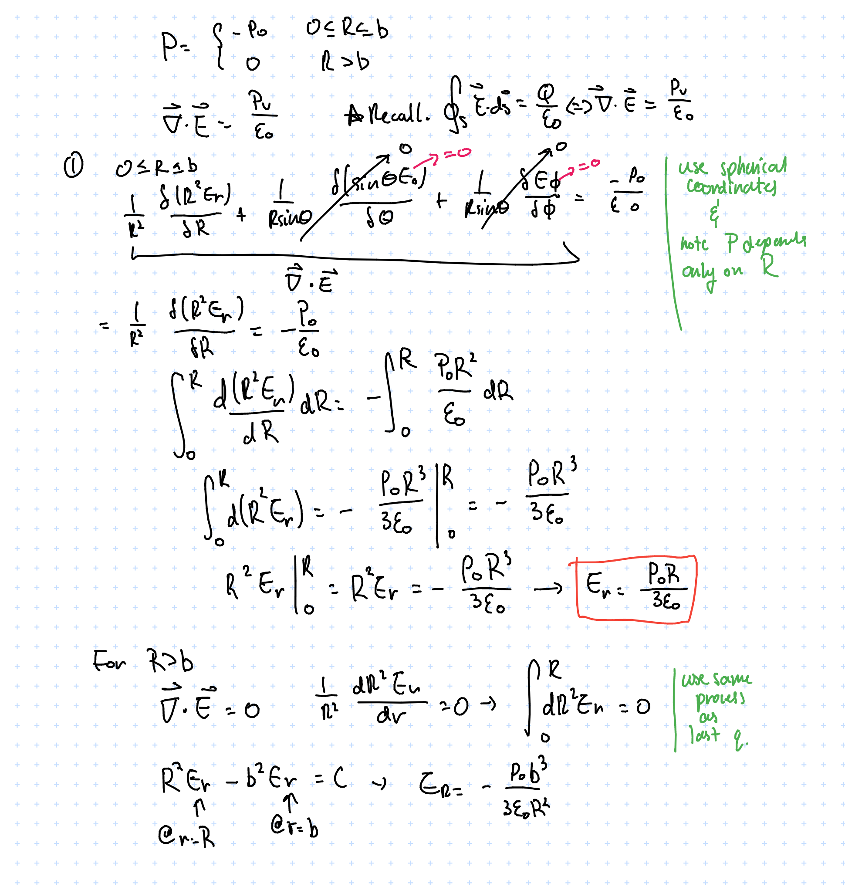
Work & Energy
We know that the electrostatic force experienced by a charge is \( \vec{F} = q\vec{E}\). Combining this with the definition of work, we can write the work done by an external force moving a point charge \( q \) from point \( A \to B \) as:
$$ W_{A\to B} = \int_A^B \vec{F_{ext}} \cdot d\vec{l} = -q\int_A^B \vec{E} \cdot d\vec{l}$$
Also, electric fields are conservative, therefore
$$ W_{B\to A} = -W_{A \to B} $$
and it follows that
Apply Stoke’s theorem
$$ \oint_l \vec{E} \cdot d\vec{l} = \vec{\nabla} \times \vec{E} 0$$
which leads to two fundamental electrostatic properties…
Postulates of Electrostatics (in free space)
- \( \vec{\nabla} \cdot \vec{E} = \frac{P_v}{\varepsilon_o} \)
- \( \vec{\nabla} \times \vec{E} = 0 \)
This also enables us to define electric potential
$$ \vec{\nabla} \times (\vec{\nabla } V) = 0 \\ since \qquad \vec{\nabla } \times \vec{E} = 0, \\ define \qquad \vec{E} = -\vec{\nabla } V $$
where \( V \) denotes potential.
Electric Potential
$$ \Delta V_{A \to B} = V_B - V_A = \frac{\Delta U_{A \to B}}{q} = - \int_A^B \vec{E}\cdot d \vec{l}$$
- \( q \) is a test charge
Potential is relative and is associated with the field (it is independent of the test charge)
We may define potential a little more rigorously to inspect its differential form:
Recall: the gradient points in the direction of maximum slope
$$ \begin{aligned} \Delta V_{A \to B} &= -\int_A^B \vec{E} \cdot d\vec{l} \cr &= \int_A^B \frac{dV}{dn} \frac{dn}{dl} dl \cr &= \int_A^B \int_A^B \frac{dV}{dn} \vec{a_n} \vec{a_l} dl \cr &= \int_A^B \vec{\nabla}V \cdot d\vec{l} \cr \therefore \quad \vec{E} &= -\vec{\nabla}V \end{aligned}$$
Applying this to a number of different charges we may derive the following:
- Potential due to point charge
$$ \begin{aligned} V &= -\int_\infty^R \vec{E} \cdot d\vec{l}\cr &= -\int_\infty^R \frac{q_1}{4\pi \varepsilon_0 R^2} \vec{a_r} \cdot \vec{a_r} d\vec{R}\cr &= -\int_\infty^R \frac{q_1}{4\pi \varepsilon_0 R^2} dR \cr \vdots \cr V(R) &= \frac{q_1}{4\pi \varepsilon_0 R} \end{aligned} $$
V(R) denotes the potential at a point of interest \( P \) that is distance \( R \) from the charge
- Potential due to discrete charge distribution (i.e. many point charges)
Electric field is conservative, so we can just sum up a modified version of the single point charge form found in 1.
$$ V(R) = \sum_k \frac{q_k}{4\pi\varepsilon_o |\vec{R} - \vec{R'_k}| } $$
Specify \( R \) as the distance from the point of interest and the charge source, \( | \vec{R} - \vec{R'_k} | \)
- Electric dipole: a pair of equal and opposite charges separated by a small distance \( d \ \)
- Dipole moment: \( \vec{P} = q\vec{d} \)
- In spherical coordinates: \( \vec{p} = p\cos\theta \vec{a_r} - p\sin\theta\vec{a_\theta} \)
Potential of a dipole can be written as the sum of two closely spaced charges:
$$ V = \frac{1}{4\pi\varepsilon_o} (\frac{-q}{| \vec{R} + \frac{\vec{d}}{2} |} + \frac{q}{| \vec{R} - \frac{\vec{d}}{2} |} ) $$
Note directions of the charges and \( d \). Also we’re only going to consider \( R \gg d \)
Begin by simplifying the expressions for the distances
$$ \begin{aligned} \frac{1}{|\vec{R} - \frac{\vec{d}}{2}|}&= \frac{1}{\sqrt{(\vec{R} - \vec{d}/{2})\cdot(\vec{R} - \vec{d}/{2})}} \cr &= \frac{1}{\sqrt{\vec{R}\cdot \vec{R} - \vec{R} \cdot \vec{d} + \frac{\vec{d} \cdot \vec{d}}{4}} } \cr \vdots \cr &= \frac{1}{R}(1+\frac{\vec{R} \cdot \vec{d}}{2R^2}) \cr \end{aligned} $$
And much the same can be done for the other term. Plugging into the expression for the potential we get:
$$ V = \frac{1}{4\pi\varepsilon_o R^2} p \cos \theta $$
V is a function of \( R \) and \( \theta \)
Next we find the field associated with this dipole. This is made easy via \( \vec{E} = -\vec{\nabla} V \)
$$ \begin{aligned} \vec{E} &= -( \frac{\delta V}{\delta R} \vec{a_R} + \frac{1}{R} \frac{\delta V}{\delta \theta} \vec{a_\theta} \frac{1}{R\sin\theta}\frac{\delta V}{\delta \phi} \vec{a_\phi} ) \cr &= \frac{2P\cos\theta}{4\pi\varepsilon R^3} \vec{a_R} + \frac{P\sin\theta}{4\pi\varepsilon R^3} \vec{a_\theta} \cr \end{aligned} $$
Notice now \( \vec{e} \propto 1/R^3 \)
Electric Potential for continuous charges
$$ V = \frac{1}{4\pi \varepsilon_o} \int_x \frac{\rho_x}{R} dx $$
where \( x \) can be either a line, surface, or a volume (and the integral would be dimensioned accordingly) depending on the charge distribution.
For example, finding \( V, \vec{E}\) for a point perpendicular to a flat disk charge of radius \( b \) with a uniform charge density of \( \rho_s \):
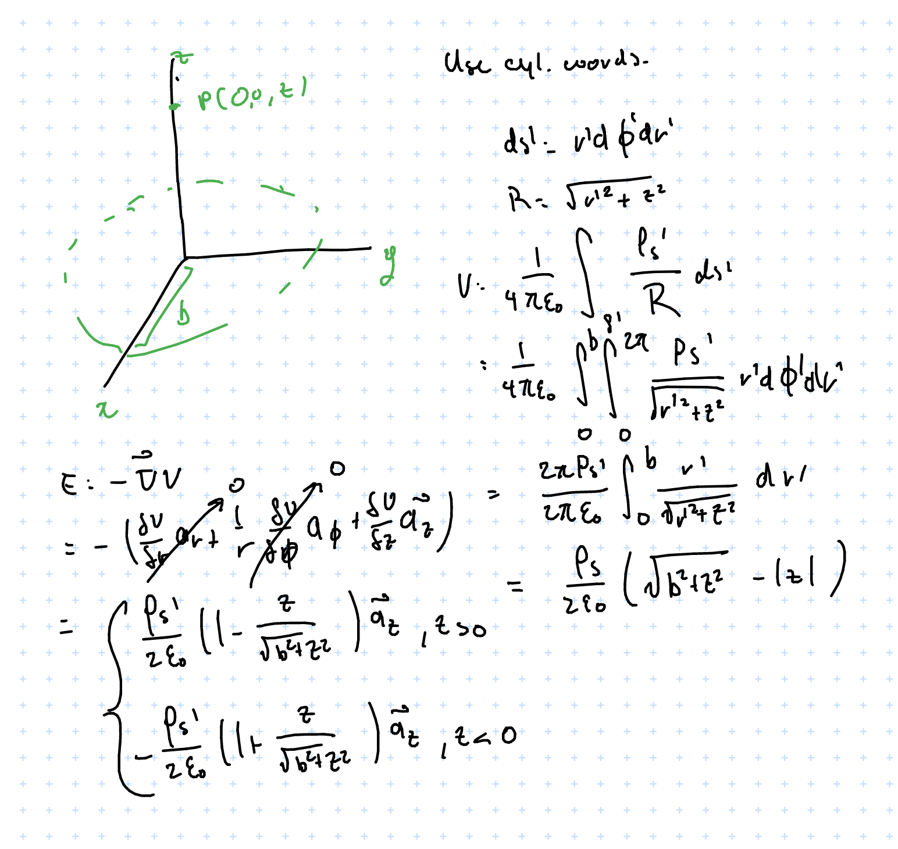
Conductors
- \( \sigma \) denotes conductivity, \( \frac{1}{\sigma} \) denotes resistivity
- Good conductors have loosely coupled electrons and partially filled CB, \( \sigma \approx 6 \times 10^7 \) (copper)
- Semiconductors have somewhat tightly bound electrons, \( \sigma \approx 1.5 \times 10^{-3 }\) (silicon)
- Insulators have very confined electrons, conductivity near zero e.g. \( \sigma \approx 10^{-14}\) (rubber)
- A perfect conductor has \( \sigma \longrightarrow \infty \), a perfect insulator has \( \sigma \longrightarrow 0 \)
- Electric fields are zero in an perfect conductor [proof]
- uncharged conductor in \( \vec{E} \) field
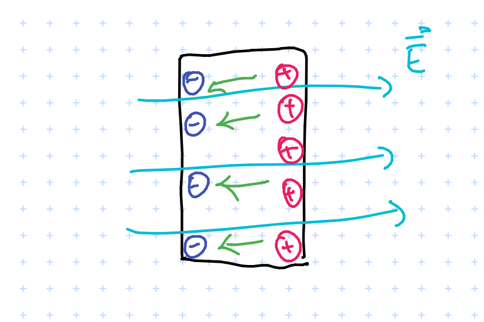 Intuition: electric field induces charges to move around in the conductor. This induces an “internal electric field” (denoted in green) and it turns out that in equilibrium this will perfectly cancel out the external field. For proof consider if this did not cancel out – this would imply violation of conservation laws
- charged conductor in \( \vec{E} \) field
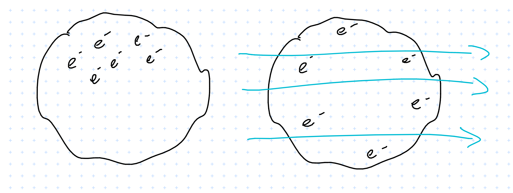
If the conductor has a charge, i.e. some electrons scattered about
In an \( \vec{E} \) field they will redistribute in order for the internal field to fully cancel out the external one.
Perfect conductors in \( \vec{E} \) field: summary
- \( \vec{E} \) = 0
- \( P_v \) = 0
- \( V = \text{constant} \); there is uniform potential everywhere
$$ \oint_{cycle} = \int_{\text{in conductor}} + \int_{\text{at surface}} = 0 $$ 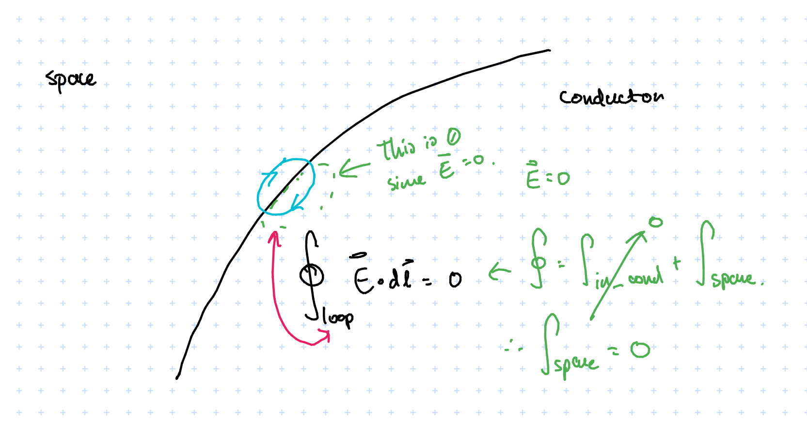
Since electric fields are conservative the cycle integral is zero. The internal field \( \vec{E} = 0\), therefore \( \int_{\text{in conductor}} = 0 \). So how can we have \( \int_{\text{at surface}} = 0 \) when there is a non-zero electric field? This is because we are looking at \( \int_{\text{at surface}} \), which is tangential to the surface (whereas the field lines radiate normal to the surface and so are perpendicular to what we’re integrating over), which explains why it evaluates to \( 0 \).
- But what about the normal component?
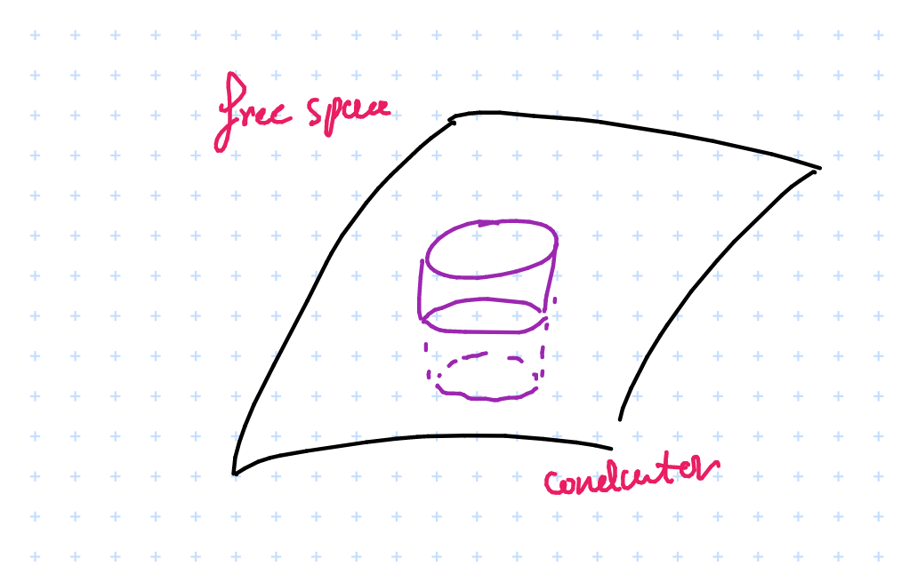
We can identify a Gaussian surface and apply gauss’s law
$$ \oint_s \vec{E} \cdot d \vec{s} = \frac{Q}{\varepsilon} = \int_{\text{top}} \vec{E} \cdot d \vec{s} + \int_{\text{bottom}} \vec{E} \cdot d \vec{s} + \int_{\text{sides}} \vec{E} \cdot d \vec{s} $$
Applying symmetry we get \( \int_{\text{sides}} = 0 \), and \( \int_{\text{bottom}} = 0 \) since \( \vec{E} = 0 \) in the conductor…we can evaluate this using Gauss’s law:
$$ \therefore \qquad \vec{E_n} = \frac{Q}{\Delta S \varepsilon_o} = \frac{P_s}{\varepsilon_o} $$
So the potential in a conductor is constant and equal to the potential in its outer surface.
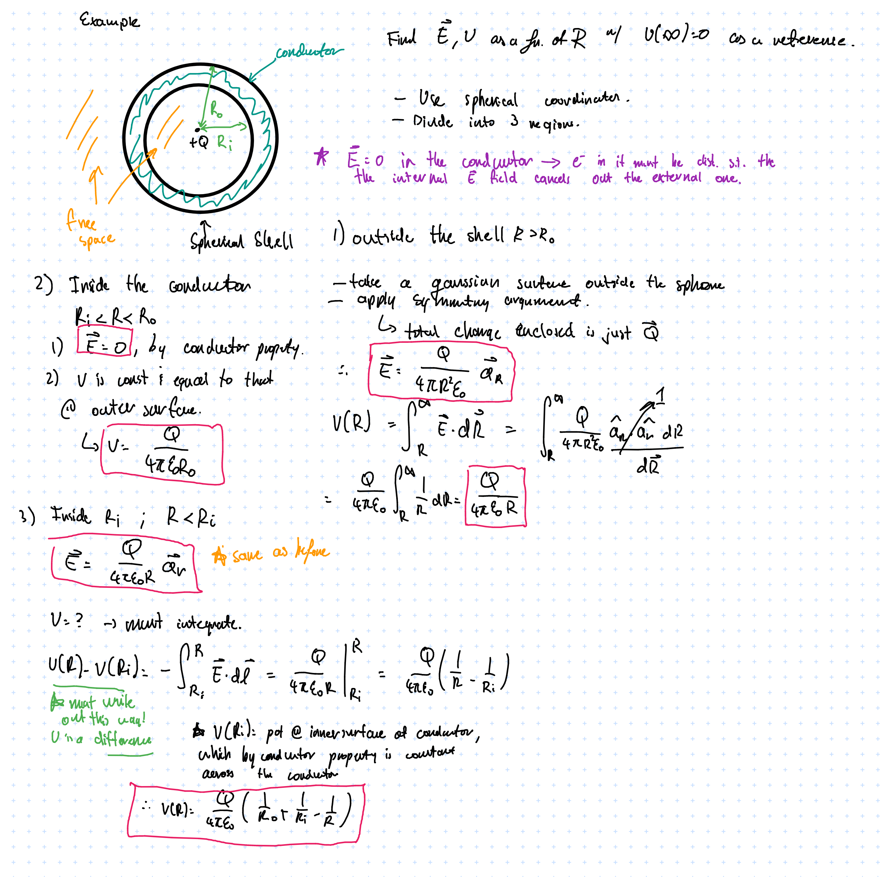
There is an error here somewhere since potential should go higher and higher as \( R \) increases… “Exercise left for the reader”
Perfect Dielectric conductors in \( \vec{E} \)
- Dielectrics have no moving charges ( no free electrons ), however there can be bond charges; dielectrics can be polarized (and hence contribute to electric potential)
- Also, some materials are made of molecules with non-zero dipole moments, e.g. \( H_2O \); external \( \vec{E} \) fields can make them align with the field
- Some materials, electrets can can exhibit permanent electric dipole moment even without an external field and can be induced by thermal poling
Polarization vector \( \vec{P} \)
$$ \vec{P} = \lim_{\Delta_v \to 0} \frac{\sum_{k=1}^{n\delta v \vec{P_k}}}{\delta v} \qquad [\frac{C}{m^2}] $$
- \( n \) = number of particles per unit volume
- \( \vec{P_k} \) = dipole moment of microscopic particles \( C-m \)
- \( \vec{P} \) = volume density of electric dipole moment; is a point function
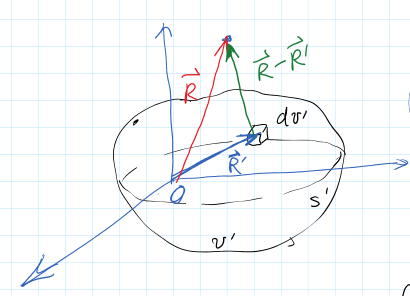
How does potential relate to polarization?
$$ d\vec{p} = \vec{P} d\vec{v} \xrightarrow[\text{electric potential}]{\text{produces}} dV = \frac{\vec{p} \cdot\vec{a_r}}{4\pi \varepsilon_o R^2} dv' $$
- \( dV \) is the contribution to potential from dipole moment in \( dv' \)
$$ V(\vec{R}) = \int_{v'} dV = \int_{v'} \frac{\vec{P} \cdot \vec{a}_{\vec{R} - \vec{R'}}}{4 \pi \varepsilon_o |\vec{R} - \vec{R}' |^2} dv' $$
And then a bunch of messy math…
$$ \begin{aligned} V(\vec{R}) &= \cr & \frac{1}{4\pi\varepsilon_o} \oint_{S\prime} \frac{\vec{P} \cdot \vec{a\prime}_{n}}{|\vec{R} - \vec{R}\prime |} ds\prime \cr & + \frac{1}{4\pi\varepsilon_o} \int_v \frac{-\vec{\nabla \prime} \cdot \vec{P}}{|\vec{R} - \vec{R}\prime | dv\prime} \cr \end{aligned} $$
- The first term is the potential produced by a surface charge distribution on \( S\prime \) with a density of\( \rho_{ps} = \vec{p} \cdot \vec{a^\prime_n} \)
- The second term is the potential produced by a volume charge distribution in \( v\prime \) with a density of \( \rho_{pv} = -\vec{\nabla} \cdot \vec{p} \)
Katex isn’t allowing me to do a \( \int_{v'} \) in the above so just pretend that the \( \int_v \) is \( \int_{v'} \)
The physical interpretation is that a dielectric material may have its dipoles aligned after being in a \( \vec{E} \) field and thus be able to produce an \( \vec{E} \) field itself.
$$ $$
Generalized Gauss’s Law
In free space:
$$ \vec{\nabla }\cdot \vec{E} = \frac{\rho_p}{\varepsilon_o} $$ $$ \oint_s \vec{E} \cdot d\vec{s} = \frac{Q_end}{\varepsilon_o} $$
In a medium:
- Must take the polarization charge \( \rho_{pv} \) as well as the free
$$ \vec{\nabla }\cdot \vec{E} = \frac{\rho_p + \rho_{pv} }{\varepsilon_o} \\ \Rightarrow \vec{\nabla } \cdot(\varepsilon\vec{E}) = P_v + ( \vec{\nabla } \cdot \vec{p} ) \\ \Rightarrow \vec{\nabla } \cdot (\varepsilon \vec{E} + \vec{P}) = \rho_v $$ Define displacement vector \( \vec{D} \) as:
$$ \vec{D} = \varepsilon \vec{E} + \vec{p} $$
Units of static flux density \( [C/m^2] \)
This brings us to the generalized Gauss’s law:
Define: Generalized Gauss’s Law
$$ \vec{\nabla} \cdot \vec{D} = \rho $$
where \( \rho \) is the free charge density. In integral form,
$$ \oint_S \vec{D} \cdot d\vec{s} = Q_{end} $$
Now we may write out the postulates of electrostatics in more general form, i.e. accounting for non-free space as well
- \( \vec{\nabla} \cdot \vec{D} = \rho \Leftrightarrow \oint_s \vec{D} \cdot d \vec{s} = Q \)
- \( \vec{\nabla} \times \vec{E} = 0 \Leftrightarrow \oint_l \vec{E} \cdot d\vec{l} = 0\)
For a linear and isotropic material…
isotropic means that \( \vec{p} and \vec{E} \) is in the same direction, i.e. if we apply a field to the material it will polarize \( p \) in the same direction as the electric field.
$$ \vec{p} = \varepsilon_o \chi_e \vec{E} $$
- \( \chi \) denotes electrical susceptibility which is unitless. \( \chi = 0 \) in a vacuum.
$$ \vec{D} = \varepsilon_o \vec{E} + \vec{p} \xrightarrow{\text{linear, isotropic}} \varepsilon_o \vec{E}(1 + \chi_e) = \varepsilon_o \varepsilon_r \vec{E} = \varepsilon \vec{E} $$
- \( \varepsilon \) denotes the absolute permittivity
- \( \varepsilon_r \) denotes the relative permittivity, aka dielectric constant
For example, a positive point charge \( Q \) at the centre of a dielectric shell
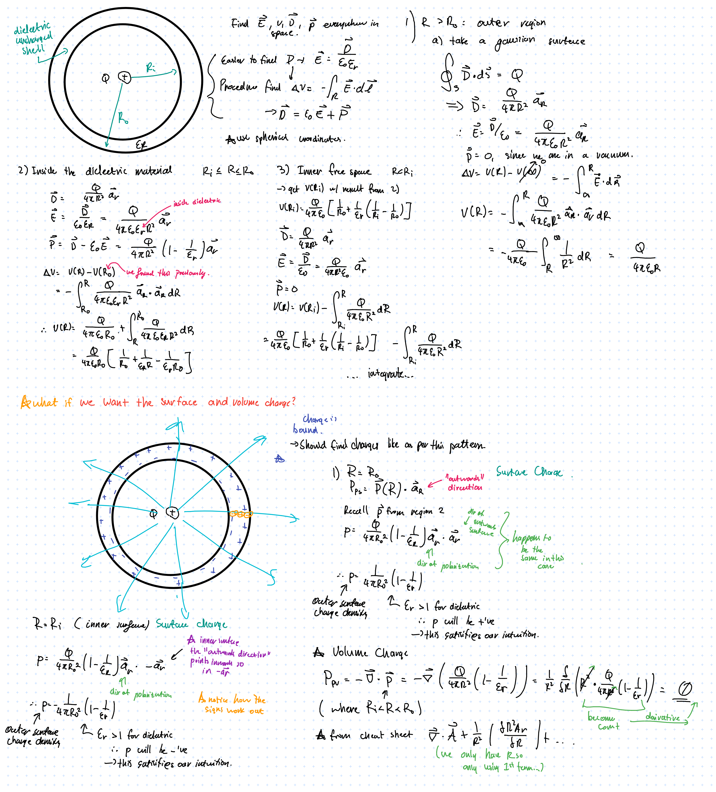
BME205: Introduction to Biomedical Engineering
Textbook: Human Physiology From Cells to Systems, 5th Canadian Edition by Sherwood and Ward (ISBN-13 978-0-17-691235-2).
Cells
Reference: Chapter 2
Components
-
Plasma Membrane: lipid bilayer studded with proteins; acts as a selective barrier between inside of cell and outside world
-
Nucleus: “Control center” of cell; genetic material (DNA in Chromosomes) storage
- Chromatin
- Nucleolus
- Nuclear pores
- Cisternae
-
Endoplasmic Reticulum: Membranous network of fluid-filled tubules and flattened sacs studded with ribosomes; forms new cell components and materials for secretion
- Rough Endoplasmic Reticulum
- Smooth Endoplasmic Reticulum
-
Lysosome: Sacs containing hydrolytic enzymes; “digestive system” of cell
-
Peroxisome: Sacs containing oxidative enzymes; detoxification system
-
Centriole: Barrel-shaped organelles composed of 9 short triplet microtubules; site of microtubule growth
-
Microtubule: slender and hollow tubes made of secretory vesicles; forms the mitotic spindle and aid in cellular transport
-
Mitochondria: “Powerhouse of the cell”: ATP production
-
Ribosome: Workbenches for protein synthesis
-
Vesicle: Transient membranous sacs for product transport
-
Microfilaments: Intertwined chains of actin molecules (in muscles, myosin molecules) – for cellular contractile systems
-
Intermediate Filaments: Irregular threadlike proteins to resist mechanical stress
-
Cytoplasm: Jelly-like “fluid” inside of cells
Cell membrane
- Cell membranes (plasma membranes) are formed of a phospholipid bilayer (hydrophilic phosphate+glycerol"head", hydrophobic fatty acid “tail”).

- Phospholipid molecules can move around the PM via
- Uncatalyzed transverse diffusion (slow, days) (think of pairs in bilayers flipping)
- Flippase-catalyzed diffusion (fast, seconds)
- Lateral diffusion (very fast, micrometer/second) (think of of a molecule moving around the bilayer)
Biological Glue
- Desmosome: a tight “spot weld” between cells
- Tight Junction: multiple “seams” between cells; forms strong semi-impermeable (selective) bond between cells. Often found in intestinal tissue
- Gap Junction: Cells coupled by “connexon"s a structure that allows for passage of ions and small molecules. Can be opened/closed to vary passage. Leaves a 2-4nm gap between cells.


Osmosis
-
Osmosis: movement of solvent from areas of high solvent concentration -> areas of low solvent concentration
- Typically only lets in small molecules and ions
- Larger ones must be transported across the bilayer using carrier proteins
-
Cell uses active transport when it must transport molecules/ions against the concentration gradient

Illustration of \( Na^+/K^+ \) pump
Ion Leak Channels
“Ion leak channels” are passive highly selective channels that allow for passage of ions in and out of the cell. Some can be gated and some are not.

Key concentrations and relative permeability of ion leak channels
Define: Nernst Equation
$$ E_x = \frac{61}{Z_x}\log_10\frac{[C]_o}{[C]_i}$$
- E = equliibrium potential (mV)
- z = valence of permeant ion (e.g. Na+ = +1, Ca+ = +2, Cl- = -1)
- [C]o = concentration of ion outside cell (mol/L)
- [C]i = concentration of ion inside cell (mol/L)
There is also a full form of the equation:
Idea: there is an osmosis concentration gradient across the membrane as well as a charge gradient
Example: Sodium ions across a cell membrane, outside concentration of 150, inside concentration of 15
$$ E_{Na^+} = \frac{61}{+1}\log \frac{150}{15} = +61mV$$
- Note: \( E_{ion} \neq V_m \)
ATP
ATP (Adenosine TriPhosphate) enables cellular activity through the energy released from breaking the high-energy phosphate bonds it contains.
$$\text{ATP} \rightarrow \text{ADP} + \text{P} + \text{energy}$$
Anabolic activities forms complex molecules from simple ones; Catabolic activities decompose complex molecules into simple ones.
ATP involves three different pathways:
- substrate-level phosphorylation
- anaerobic glycolysis
- aerobic metabolism Most cells generate ATP through the 4-step process glycolysis process:
- glycolysis (aerobic + anaerobic)
- 10 sequential steps that break glucose down into pyruvic acod molecules
- not very efficient; yields only 2x ATP and 2x NADH per molecule of glucose
- decarboxylation of pyruvate
- tricarboxylic acid cycle (TCA cycle, aerobic)
- electron transport chain (aerobic)
However substrate-level phosphorylation is often used to immediately generate ATP, i.e. by muscle cells during intense exercise. This is done by using creatine phosphate (CP) as a substrate and catalyzing the ATP synthesis process with creatine kinase. This reaction is reversible, i.e. ATP can be produced via CP and vice-versa.
$$ CP + ADP \xrightarrow{\text{creatine kinase}} \text{creatine} + ATP$$
DNA & Chromosomes
DNA is built up of nucleotides, each of which has three components: a nitrogenous base, a five-carbon sugar deoxyribose, and a phosphate group. These are linked together by hydrogen bonds between bases, which is highly specific: adenine (A): thymine (T), guanine (G): cytosine (C). A and G have double ring structures while C and T have single ring structures.
Chromosomes are made of DNA that has been “super coiled” (think: telephone cord). Humans have 23 pairs of chromosomes.
 .
.
There are multiple ways that this can be packed, e.g. zigzag or solenoid patterns:


Replication
Note: DNA is formed of two complimentary strands (5', 3' strands).
- DNA is first split apart by proteins called initiators which look for origin base sequences
- There are many origins along the DNA strand since it would take too long to split the DNA from just one point.
- With the opening made, helicase enzymes gets to business to really start breaking the DNA apart.
- Think of a zipper being unzipped in two ways.
- Single-stranded binders keep the DNA propped open and gyrase prevents it from torquing and knotting. Then, the actual replication step takes place
- A piece of temporary RNA bonds with the first nucleotide opened by helicase
- DNA polymerase comes along and pairs up bases
- After the bases are all put in, the temporary RNA is broken off and the DNA fragments are joined together by ligase
- proofreading DNA polymerase goes along the DNA and checks for errors by looking for “bumps” in the structure And then it is put into the chromosomal form
- DNA is wrapped around histones & telomeres (single-sided pieces of “junk DNA” at the end) managed by trimming them to equal length in mitosis or being wrapped with RNA primer and telomerase enzyme in meiosis.
Gene Expression
Why don’t skin sprout eyeballs or livers grow toes?
Gene expression is the mechanism by which only the appropriate genes are called upon to produce the desired function. Usually the default setting for gene expression is to be off.
Things that can impact gene expression:
- Enviromental factors (usu. heat/light)
- Genetic presets (e.g. some that are supposed to activate at certain stages of development; cues taken from cell or neighbouring cells)
- Hormones; chemicals produced by brain and glands
When a gene gets switched on it gets “transcribed” into a piece of messenger RNA, which is a single stranded nucleic acid which carries the information out of the nucleus and into the cell.
Note: RNA contains Uracil (U) instead of Thymine (T) as a compliment to Adenine (A).
A key property of RNA is its additional oxygenation, which makes it a lot more reactive. This, combined with the fact that U can bond with all the other bases gives the ability for RNA to form complex non-linear shapes.
Another property of RNA is that it is is single-use; each piece of mRNA ceases functioning after it’s task has been completed.
Transcription
Nerve Cells
Recall: there are ion channels in the cell membrane. T
PHY294: Quantum and Thermal Physics
Schrodinger & the Hydrogen Atom
Define: Schrodinger’s Equation
$$ H\psi = E\psi $$
- \( H \) is the Hamiltonian, \( \psi \) is the wave function, and \( E \) is the energy.
- \( |\psi|^2 \) gives the probability density function.
Generalizing to three dimensions:
$$ \frac{\delta^2}{\delta x^2} + \frac{\delta^2\psi}{\delta y^2} + \frac{\delta^2\psi}{\delta z^2} = \frac{2M}{\hbar^2}[U-E] \psi \\ \frac{1}{r}\frac{\delta^2 \psi}{\delta r^2}(r\psi) + \frac{1}{r^2sin\theta} \frac{\delta}{\delta \theta} (\sin \theta \frac{\delta \psi}{\delta\theta}) + \frac{1}{r^2 \sin^2 \theta} \frac{\delta^2 \psi}{\delta \phi^2} = \frac{2M}{\hbar^2}[U-E]\psi$$
- \( U \) denotes potential (in H atom these are columbic forces)
- \( E \) is energy non-dependent on distance to the nucleus
- \( M \) is mass
Recall: for a 1D particle in a box we use \( \psi = Asin(kx) + Bcos(kx)\) and then we can apply the boundary conditions at the bounds of the box. We may then find \( \psi \) to be \( \sqrt{\frac{2}{L}}sin()\frac{n\pi}{L})x\) and \( E_n = \frac{n^2h^2}{8mL^2} \)) where \( n \)) is a integer > 0.
In 2D and 3D potential wells this is more complicated but the same idea follows; we apply separation of variables and the boundary conditions.
2D Potential Well
- Write out 2D Schrodinger’s equation
$$ \frac{\delta^2\psi}{\delta x^2} + \frac{\delta^2\psi}{\delta y^2} = \frac{2M}{\hbar^2}[U-E]\psi $$
For an infinite potential well,
$$ U(x,y) = \begin{cases} 0 & 0 \leq x \leq a \text{ and } 0 \leq y \leq a \cr \infty & \text{otherwise} \cr \end{cases} $$
- Identify boundary conditions
- Since \( U = 0 \) in the box, \( E \) can take on all non-zero values.
- The particle cannot escape from the box; \( \psi (x, y) = 0 \) @ the boundaries Therefore we can reduce the Schrodinger equation to
$$ \frac{\delta^2\psi}{\delta x^2} + \frac{\delta^2\psi}{\delta y^2} = \frac{2ME}{\hbar^2}\psi $$
- Use separation of variables
$$ \psi(x, y) = X(x) Y(y) $$
$$ \frac{\delta^2\psi}{\delta x^2} + \frac{\delta^2\psi}{\delta y^2} = \frac{2ME}{\hbar^2}(X(x) Y(y))$$
Equations like the above reduced Schrodinger equation guarantee that any solution can be expressed as a sum of separated solutions \( \rightarrow \) once we find all solutions of form \( X(x) Y(y) \) we will have found all possible solutions.
… and then do a bunch of math.
$$ \begin{aligned} \frac{\partial^2 \psi}{\partial x^2} &= Y(y) \frac{\partial^2 }{\partial x^2} X(x) \cr \frac{\partial^2 }{\partial x^2} X(x) &= \frac{d^2}{dx^2}X(x) = X''(x) \cr \vdots \cr & \therefore \frac{\partial^2 \psi}{\partial x^2} = Y(y)X''(x) \cr & \therefore \frac{\partial^2 \psi}{\partial y^2} = X(x)Y''(y) \cr \end{aligned} $$
Can be simplified by taking \( y \) to be fixed while looking for \( \frac{\partial^2 \psi}{\partial x^2} \) and vice-versa
Next substitute them into the Schrodinger equation
$$ Y(y) X''(x) + X(x) Y''(y) = -\frac{2ME}{\hbar^2} X(x) Y(y) $$
divide through with \( Y(y) X(x) \) to get something of form \( f(x) + g(y) = C \)
$$ \frac{X''(x)}{X(x)} + \frac{Y''(y)}{Y(y)} = -\frac{2ME}{\hbar^2} $$
This tells us that \( X(x) \), which can only depend on \( x \), does not depend on \( x \) and therefore implies that \( X''(x)/X(x) \) is a constant. Taking this constant to be \( -k_x^2 \) we obtain
$$ X''(x) = -k_x^2X(x) $$
which is of the same form as the Schrodinger’s equation for a 1D potential well.
The same argument can be made for \( Y \).
-
Apply boundary conditions
-
\( X(x) = 0 \qquad x = 0 , a \)
-
\( Y(y) = 0 \qquad y = 0 , a \)
We know the solution for a 1D potential well (\( X(x) = B\sin{k_x x}\)); \( k_x = \frac{n_x\pi}{a}, \qquad n > 1 \in \mathbb{Z} \)
Therefore we obtain
$$ X(x) = B \sin{\frac{n_x \pi x}{a}} \\ Y(y) = C \sin{\frac{n_y \pi y}{a}} $$
And since \( \psi(x,y) = X(x) Y(y) \)
$$ \psi(x,y) = BC\sin(k_x x) \sin{(k_y y)} = A \sin{\frac{n_x \pi x}{a}} \sin{\frac{n_y \pi y}{a}} =$$
- Identify allowed energies
Recall: $$ Y(y) X''(x) + X(x) Y''(y) = -\frac{2ME}{\hbar^2} X(x) Y(y) $$
Substitute what we have derived since (i.e. \( X''/X = -k_x^2 \)) and we get $$ E = \frac{\hbar^2 \pi^2}{2Ma^2}n^2 \qquad [n = 1,2,3\dots] $$
Note quantized energy
Central Force Problem
When applying to a hydrogen a few changes have to be made since it is not linear/square/cubic/etc and is spherical instead. This problem is called the “central force problem” and is solved in much the same way as the square/rectangular potential wells, except using spherical coordinates. In two dimensions we use much the same method as prior with the 2D infinite potential well, but in polar coordinates.
$$ \frac{\delta^2\psi}{\delta x^2} + \frac{\delta^2\psi}{\delta y^2} = \frac{1}{r}\frac{\delta^2 \psi}{\delta r^2} + \frac{1}{r}\frac{\delta \psi}{\delta r} + \frac{1}{r^2}\frac{\delta \psi^2}{\delta \phi} $$
And then apply separation of variables \( \psi(r, \phi) = R(r) \Phi(\phi) \). This has much the same procedure as before so will skip over it to find that we get all solutions as \( \Phi(\phi) = e^{im\phi} \). Applying Euler’s identity we note that \( \psi(r, \phi) = \psi(r, \phi + 2\pi) \) which implies that the wave function (and the separated \( \Phi(\phi) \)) takes on discrete solutions, i.e. \( m = 0, \pm 1, \pm 2, \dots \)
Extending on this we may also derive that angular momentum is quantized.
I’m behind on class so the derivations for angular momentum and energy levels will not be typed out.
$$ L_z = m\hbar \qquad[ m = 0, \pm 1, \pm2, \dots] $$
Much the same approach applies to the three dimensional case. The solution is a bit of work to write out, so see this.
The key takeaway is that by solving the Schrodinger equation we see quantization come out of the cracks naturally after we apply separation of variables i.e. \( \psi(r, \theta, \phi) = R(r) \Theta(\theta) \Phi(\phi) \)
- The \( \Phi \) equation
$$ \Phi''(\phi) = 0m^2 \Phi(\phi) $$ Solving the \( \Phi \) equation gives us the solution \( \Phi(\phi) = e^{im\phi} \). Since \( \Phi(\phi) \) must me periodic with period \( 2\pi \) we can use the Euler identity to find that \( m = 0, \pm 1, \pm2, \dots \) and that angular momentum is quantized i.e. \( L_z = m \hbar \)
- The \( \Theta \) equation
$$ \frac{1}{\sin( \theta)} \frac{d}{d \theta} (\sin \theta \frac{d\Theta}{d\theta}) + (k - \frac{m^2}{\sin^2 \theta}) \Theta = 0 $$
This is a lot more difficult to solve and is called Legendre’s equation. It turns out that it has unique solutions for each \( k \) of form \( k = l(l+1) \qquad l \geq |m| \)
From this we get the result that particles with a wave function as given above has angular momentum
$$ L = \sqrt{l(l+1)} \hbar $$
where \( l \) can be any integer greater than equal to 1, and for any given \( l \), \( m \) can take on integer values \( |m| \leq l \)
It is sometimes useful to express this in vector form 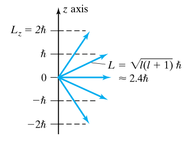 The \( z \) component can take on \( 2l+1 \) values
- The \( R \) equation $$ \frac{d^2}{dr^2} (rR) = \frac{2M}{\hbar} [U(r) + \frac{l(l+1)\hbar^2}{2Mr^2} - E] (rR) $$
- \( k = l(l+1) \)
This equation determines the form of the potential \( U(r) \). Notice that it does not depend on \( m \), therefore for a given \( L \) we will find the same allowed energies for all \( 2l + 1 \) orientations; it is spherically symmetric. Therefore a level will always be at least \( 2l + 1 \) fold degenerate. It turns out that the energies of the hydrogen atom are described by
$$ E = -\frac{m_e (ke^2)^2}{2\hbar^2} \frac{1}{n^2} $$
which can be simplified by recognizing the Rydberg energy term
$$ E = -\frac{E_R}{n^2} \qquad E_R = 13.6 eV $$
Wave Function
$$ \phi_{nlm} = R_{nl}(r) \Theta_{lm}(\theta) e^{im\phi} $$
Expressions for \( R \) and \( \Theta \) are given in tables

Solutions from textbook. I think these would be provided if applicable.
Probability Density Functions
- We can derive probability density functions for different shells of the hydrogen atom. For example for the ground state \( P_{1s}(r) = 4\pi A^2 r^2 e^{-2r/a_B} \).
- Since this is a probability density function, \( \int_{-\infty}^{\infty} P(r) = 1 \). This allows us to solve for the constants in that expression.
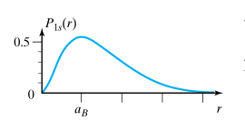 Notice maximum probability at \( r = a_B \), which is the Bohr radius
- More probability density functions can found with a google search.
Hydrogen-like atoms
Hydrogen-like atoms can be approached in much the same way; whereas the potential of an electron in hydrogen is \( U = -ke^2/r \), it is \( U = -Zke^2/r \) in a hydrogen-like ion.
\( Z \) is the atomic number
Allowed energies of a hydrogen-like ion:
$$ E = -Z^2 \frac{E_R}{n^2} $$
And for finding the wave function apply much the same procedure as before but incorporate \( Z \), i.e. the parameter becomes
$$ \frac{\hbar^2}{m_e Z ke^2} = \frac{a_B}{Z} $$
For example the ground state of a hydrogen-like ion is given by
$$ \psi_{1s} = Ae^{-\frac{Zr}{a_B}} $$
Quantum Numbers, and wrapping up
- \( n \in \{1, 2, 3, \dots \}\): principal quantum number, describes energy level of atom
- \( l \in \{ 0, 1, 2, \dots, (n-1) \}\): azimuthal quantum number, describes angular momentum and sub-shell
- \( m_l \in \{ -l, \dots, -1, 0, 1, \dots, l \} \): magnetic quantum number, describes energy levels available within a sub-shell
- \( m_s \in \{ +1/2, -1/2 \}\): electron spin of the orbital
- The \( n \)th level has degeneracy \( 2n^2 \). The 2 is caused by electron spin
// following notes will be rather rough ... //
Electron Spin
Electrons have a spin. But they don’t really spin. Don’t question it.
$$ J = L + S $$
- \( J \) is the total angular momentum of the electron
- \( L \) is the angular momentum of the electron
- \( S \) is the spin of the electron
Think of the earth orbiting the sun; earth’s spin is \( S \) and it’s orbit is \( L \)
- Spin is denoted via the spin quantum number, \( \pm \frac{1}{2} \)
- We saw prior that \( L \) is quantized by \( L = \sqrt{l(l+1)} \hbar \)
- Magnitude \( S = \sqrt{s(s+1) \hbar } = \frac{\sqrt{3}}{2} \hbar \): “intrinsic angular momentum”
- degeneracy of n th level in hydrogen: \( 2n^2 \)
The electron acts like a rotating electric charge. A current \( i \) in a loop of area \( A \) in a magnetic field \( B \) experiences torque \( \Gamma \)
$$ \Gamma = iA \times B $$
or
$$ \Gamma = \mu \times B \qquad \mu = iA $$
The potential is is the negative of the work
$$ U = -\mu B cost cos \theta = -\vec{\mu} \cdot \vec{B}$$
We can define a ratio of \( \mu \) to \( L \) for the electron to to be
$$ \frac{\mu}{L} = \frac{e}{2m_e} \Rightarrow \vec{\mu} = -\frac{e}{2m_e}\vec{L} $$
Spin was demonstrated experimentally through the Zeeman experiment/Zeeman effect. The basic intuition is that applying a magnetic field to an atom will induce a change in energy by \( -\vec{\mu} \cdot \vec{B} \) which depends on the orientation of \( \mu \). This means that the energy will change for each of the \( 2l + 1 \) possible orientations; by applying a magnetic field we the degeneracy of the original energy level.
$$ \Delta E = (\frac{e}{2m_2}) L_z B $$
And if we extract out the bohr magneton constant \( \mu_B = \frac{e\hbar}{2m_e} = 9.27 \times 10^-{24} A \cdot m^2 = 5.79 \times 10^{-5} eV/T \) this reduces to \( \Delta E = m\mu_B B \). Since \( m \) can have \( 2l+1 \) values \( \longrightarrow \) separation of the energy levels is \( \mu_B B \).
Now, considering the spin up/down case, we expect the total spin to be proportional to the spin angular momentum, i.e.
$$ \vec{\mu}_{\text{spin}}= -\gamma \vec{S} = -\frac{e}{m_e}\vec{S} $$
\( \gamma \) is the spin gyromagnetic ratio
and the total moment of an electron is
$$ \vec{\mu_{\text{tot}}} = \vec{\mu_{\text{orb}}} + \vec{\mu_{\text{spin}}} = -\frac{e}{2m_e}(\vec{L} + 2\vec{S}) $$
armed with the above we can calculate the anomalous Zeeman effect (where the spin does contribute) to find that the separation of levels is
$$\Delta E 2\mu_B B $$
which is twice the value predicted for the normal effect (which makes sense since the \( \gamma \)) is twice the orbital ratio.
Multi-Electron Atoms, Pauli Principle, and Periodic Table
- can usually use IPA (independent particle assumption) when working with more than one electron
- need to find the IPA potential energy for electrons
$$ U(r) = -Z_{eff}(r) \frac{ke^2}{r} $$
$$ \begin{cases} Z_{eff}(r) \approx Z & r \text{inside all other electrons} \\ Z_eff \approx 1 & r \text{outside all other electrons} \\ \end{cases} $$
Can model it as a superposition of two cases depending on distance from other electrons/nucleus
\( U(r) \) is pretty similar to the hydrogen potential function we know and love so we can use that as a starting off point.
- Each level has degeneracy of at least \( 2(2l+1) \)
Define: Pauli Exclusion Principle
“No two electrons in a quantum system can occupy the same quantum state”
anything with full subshells (i.e. all paired electrons) will have spin 0; non-full subshells e.g. alkali metals and halogens will have spin \( \frac{\sqrt{3}}{2} \). For getting the angular momentum just take the \( l \) of the valence electron and plug it into \( L = \sqrt{l(l+1)} \hbar \)
Molecules and Bonding
-
\( R_o \) gives the bond length; distance between nuclei
-
\( B (eV) \) gives the bond energy; energy needed to seperate the bond
-
diatomic molecules are bonded together really really hard
-
noble gases interact very weakly with other atoms (recall gauss’s law) and have really high energies for their excited states
-
ionic bonding; electron transfer causing a strong electrostatic attraction; creates electric dipole \( p = qd \)
-
covalent bonding; sharing of electron
-
mixed bonds; a little of both – most bonds are a little bit of both. None are completely ionic and a few are completely covalent (i.e. \( H_2, O_2 \))
-
bond strengths can be estimated using the expression for electrostatic potential \( U = \frac{-ke^2}{R_o} \)
-
energy released in a chem. reaction depends on the bond energies; i.e. \( \Delta E = \sum_{i=1}^{n} \Delta E_i \) each \( E_i \) denotes the bond energy to make/break a bond
ionic bonds
- two step processes; 1) transfer of electron (costs energy) 2) electron capture (energy gain); electron affinity; i.e. for forming \( NaCl \) the energy cost \( \Delta E \) is 5.1eV - 3.6eV = 1.5eV where 5.1 is the ionization energy and -3.6 is the electron affinity
- so why do bonds form even though it costs energy? Note energy changes depending on the distance between them
- bonding will happen at a critical distance \( R_c = \frac{ke^2}{\Delta E} \)
- can estimate the binding energy \( B \approx \frac{ke^2}{R_o} - \Delta E \)
- so why do bonds form even though it costs energy? Note energy changes depending on the distance between them
- define valence: no. of electrons an atom gains/loses in forming a molecule.
- a lot of atom behaviour depends on the valence of the atom
covalent bonds
- must solve Schrodinger equation for the covalent bond
- i am not going to be doing that now…
ESC204: Praxis III
// coming ... maybe? //
TEP327: Engineering and Law
** “It depends” **
Why do engineers need to know about law?
- Engineering ends up stepping across a lot of jurisdictions, so we kinda need to know about it.
Law is …
-
very territorial: must note jurisdiction
- Must develop intuition for jurisdiction (See section 91)
- Generally:
- Things outside of Canada & maintained across Canada – Federal
- Things that are managed within Canada and aren’t necessarily consistent (local effect) – Provincial
- Things that Provincial gov. doesn’t want to deal with – Municipal (via mandate)
- And for everything – consider case law, etc.
-
always dependent on context and subject to interpretation; the law’s wording can stay constant but the interpretation can change over time
- There are standard methods of interpretation (Living tree vs originalist, strict literal vs commercial reality/intentions)
- Canada is bijural (both civil and common law)
- Note difference between public (refers to society as a whole) and private law (individual interactions)
-
professional engineers are bound by their administrative body
- operates under assumption that only engineers can truly understand how engineers should best act
- part of it regulates that professional engineers should “be of good character”
- code of ethics is enforceable
- can be enforced by law because engineers are bound by professional engineers act (Ontario) or whatever it is in their governing body
- it is intentionally and often vague
- operates under assumption that only engineers can truly understand how engineers should best act
Case Briefing
- Facts:
Note that with with law we first enter the facts and evidence, then apply the relevant law to it.
- Issues
- Rule/Ratio
- Reasoning
- Holding
- patents can have classifications (which will usually be given in patent search results)
- can also search classifications and then filter by that.